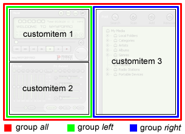

See also Variant/Condition
See also Variant/Condition
|
 |
<customsettings name="Example.default" style="extended|default"> <customitem name="template1" title="Item 1" style="fixed" group="left"/> <customitem name="template2" title="Item 2" style="sizable" group="left"/> <customitem name="template3" title="Item 3" style="sizable" group="right"/> <customgroup name="all" attach="all"/> <customgroup name="left" parent="all" style="vertical" attach="top|bottom"/> <customgroup name="right" parent="all" style="vertical" attach="all"/> </customsettings> |
| name | name, depends on application |
| title | title of this layout, shown in context menu |
| style | see remarks |
| category | key command category |
| reorder | item order can be changed by user e.g. move second item before first item. |
| sizewindow |
Resize the containing window when items are shown/hidden. This style must not be specified for extended custom settings, because resizing is done automatically by the item groups! |
| extended | extended style, enables item grouping |
| commands | enable key commands |
| default | default layout |
| name | template name |
| alternative | alternative template name, if the first template is not present in current skin. This can be a default template, provided by the application. |
| title | item title, shown in context menu |
| style | see remarks |
| group | name of group which contains this item |
| condition |
Condition to show this item e.g. for item3 the condition
could be "item1 OR item2". This means that item3 can only
be shown if item1 or item2 is visible, and will be hidden
automatically if both item1 and item2 are hidden. See also Variant/Condition
|
| command | key command name |
| shortcut | default key shortcut to show/hide this item (e.g. "Ctrl+P") |
| fixed | Item can not be hidden by user. There should be at least one fixed item. |
| hidden | item is initially invisible |
| variant | This item is shown exclusively i.e. all other items and groups are removed from screen and replaced by a single template. |
| sizable | item is resizable |
| floating | item is in a separate floating window (not in a group) |
| name | group name |
| parent | name of parent group |
| style | group style, see remarks |
| attach |
group attachement View Attachement
|
| vertical | align items vertically (default is horizontal) |
| name | name of the <customsettings> object, defining this view |